Université de Perpignan Via Domitia
IUT, BUT Science des Données, 3e année
SAÉ 5.EMS.01 : Mener une étude statistique dans un domaine d'application
Réalisé par Coulibaly Aboubakar, [Nom 2] et [Nom 3]
Encadrant : Sébastien Pinel
Année universitaire 2026-2027
Décembre 2026
| N° | Titre | Section |
|---|---|---|
| 1 | Distance au fast-food le plus proche en Nouvelle-Zélande (Pearce et al., 2007) | 1.4 |
| 2 | Les kebabs de la métropole | 4.1 |
| 3 | Les kebabs à Marseille, zoom sur l'hypercentre | 4.1 |
| 4 | Nombre de kebabs par carreau de 200 m | 4.2 |
| 5 | Carte de chaleur des kebabs à Marseille | 4.2 |
| 6 | Nombre de kebabs pour 10 000 habitants | 4.3 |
| 7 | Niveau de vie et implantation des kebabs à Marseille | 5.1 |
| 8 | Corrélations entre kebabs et caractéristiques des carreaux | 5.3 |
| 9 | Jeunes adultes et implantation des kebabs à Marseille | 5.4 |
| 10 | Âge des habitants des carreaux avec et sans kebab | 5.4 |
| 11 | Gares, stations et kebabs à Marseille | 5.6 |
| 12 | Isochrones à pied autour de la gare Saint-Charles | 5.6 |
| 13 | Ce qui explique la présence d'un kebab (modèle) | 6.2 |
| 14 | Diagramme de Gantt prévisionnel | Annexe A |
| 15 | La scène 3D sur Marseille | Annexe D |
| 16 | La simulation dans la scène 3D | Annexe D |
| N° | Titre | Section |
|---|---|---|
| 1 | Sources de données mobilisées | 3.2 |
| 2 | Base finale des kebabs par source et fiabilité | 3.3 |
| 3 | Kebabs par arrondissement de Marseille | 4.3 |
| 4 | Test de regroupement des kebabs | 5.2 |
| 5 | Carreaux avec et sans kebab à Marseille | 5.3 |
| 6 | Taux de kebabs par groupe d'arrondissements | 5.5 |
| 7 | Distance des kebabs et des habitants aux gares | 5.6 |
| 8 | Kebabs et habitants selon le temps de marche depuis Saint-Charles | 5.6 |
| 9 | Effets estimés par le modèle | 6.2 |
| 10 | Performances du modèle en validation croisée | 6.3 |
| 11 | Base des kebabs : description des colonnes | Annexe C |
| 12 | Indicateurs des carreaux : calcul | Annexe C |
Où s'installent les kebabs de la métropole d'Aix-Marseille-Provence, et que dit leur carte du territoire ? Faute de liste officielle, nous avons construit une base de 144 kebabs en croisant OpenStreetMap et le répertoire SIRENE, puis nous l'avons rapprochée des données carroyées de l'Insee (Filosofi 2019, carreaux de 200 m) et des gares et stations. Les kebabs sont deux fois plus regroupés que la population. Ils occupent des carreaux denses, au niveau de vie bas, où vivent de jeunes actifs, et surtout proches du métro et du tram : 78 % des kebabs marseillais sont à moins de 500 m d'une station, contre 39 % des habitants. Une régression logistique (AUC de 0,93 en validation croisée) place le niveau de vie en tête des facteurs, devant la densité et la proximité d'une station. La carte des kebabs reproduit ainsi la fracture sociale de Marseille, entre un centre populaire très fourni, des quartiers Nord intermédiaires et un Sud aisé qui en compte très peu. Une scène 3D interactive permet d'explorer ces résultats.
Mots-clés : kebab, analyse spatiale, Marseille, Aix-Marseille-Provence, données carroyées, Insee Filosofi, OpenStreetMap, SIRENE, gares, inégalités socio-spatiales.
| Terme | Définition |
|---|---|
| Agglomération | Dans cette étude, le territoire de la Métropole d'Aix-Marseille-Provence (92 communes) |
| API | Service en ligne qu'un programme peut interroger pour récupérer des données |
| Carreau Insee | Carré de 200 m de côté pour lequel l'Insee diffuse des statistiques |
| EPCI | Établissement public de coopération intercommunale, ici la métropole |
| Filosofi | Fichier de l'Insee sur les revenus et la pauvreté, issu des données fiscales |
| Isochrone | Zone que l'on peut atteindre depuis un point en un temps donné, par exemple 10 minutes à pied |
| NAF | Nomenclature des activités françaises (56.10C correspond à la restauration rapide) |
| OSM | OpenStreetMap, carte collaborative et libre |
| SIRENE | Répertoire de l'Insee qui recense les entreprises et leurs établissements |
| SIRET | Numéro unique d'un établissement, à 14 chiffres |
Le kebab est l'un des commerces de restauration rapide les plus répandus en France. Une vidéo des Échos, « Ce que la carte des kebabs révèle de Paris », a montré que leur répartition dans la capitale reflète ses fractures sociales. Sur internet, un dicton fait aussi débat : « plus c'est près de la gare, moins le kebab est bon ».
Nous avons voulu transposer cette démarche à l'agglomération marseillaise, que nous entendons ici comme la Métropole d'Aix-Marseille-Provence. Elle réunit 92 communes, environ 1,9 million d'habitants et 3 150 km². C'est un territoire très contrasté. On y trouve une grande ville dense et marquée par une forte opposition entre ses quartiers Nord et Sud (Marseille, 886 000 habitants répartis en 16 arrondissements), une seconde ville plutôt aisée (Aix-en-Provence), des pôles industriels autour de l'étang de Berre et de Fos-sur-Mer, et de nombreuses communes périurbaines ou rurales.
Comment expliquer la répartition spatiale des kebabs dans l'agglomération marseillaise, et cette répartition révèle-t-elle d'autres fractures socio-spatiales du territoire ?
Pour répondre à cette question, nous partons de cinq hypothèses.
La première (H1) est que les kebabs ne sont pas répartis de façon homogène : ils se concentreraient dans certaines zones, comme les centres-villes et les axes passants, et davantage à Marseille que dans le reste de la métropole.
La deuxième (H2) est que leur densité dépend des caractéristiques des habitants : densité de population, part de jeunes, niveau de revenu et part de logements sociaux.
La troisième (H3) est que les kebabs sont plus nombreux à proximité des gares et des stations.
La quatrième (H4) est que leur répartition diffère nettement entre les quartiers Nord et Sud de Marseille, et entre le centre de la métropole et sa périphérie.
Enfin, à titre d'ouverture, la cinquième (H5) reprend le dicton : les kebabs proches d'une gare seraient moins bien notés.
Notre démarche s'inspire d'un article de géographie de la santé : Neighborhood Deprivation and Access to Fast-Food Retailing: A National Study, de Pearce, Blakely, Witten et Bartie, publié en 2007 dans l'American Journal of Preventive Medicine.
Objectif. Les auteurs se demandent si, en Nouvelle-Zélande, les fast-foods sont plus faciles d'accès dans les quartiers défavorisés, et si ce lien diffère de celui observé pour les commerces qui vendent une alimentation plus saine. La question vient de la santé publique : l'obésité y est deux fois plus fréquente dans les quartiers les plus pauvres, et l'environnement alimentaire pourrait en être l'une des causes.
Méthode. Les auteurs ont obtenu la liste de tous les fast-foods du pays auprès des 74 collectivités chargées des contrôles d'hygiène, puis l'ont vérifiée avec l'annuaire : 2 930 établissements, dont 474 appartiennent à des chaînes multinationales. Pour chacun des 38 350 îlots de recensement (environ 100 habitants chacun), ils calculent la distance par la route entre le centre de population de l'îlot et le fast-food le plus proche. Les îlots sont classés en dix groupes selon un indice de défavorisation construit à partir du recensement (revenus, chômage, accès à une voiture, statut d'occupation du logement…). Les distances médianes des dix groupes sont comparées par une analyse de variance, en séparant zones urbaines et rurales, puis à densité de population égale.
Résultats. La distance médiane au fast-food le plus proche passe de 1 545 m dans les quartiers les plus favorisés à 742 m dans les plus défavorisés : elle est au moins deux fois plus courte dans les quartiers pauvres (p < 0,001). Le constat vaut pour les chaînes comme pour les fast-foods locaux, et il tient à densité égale. Il s'inverse en revanche à la campagne, où les îlots les plus pauvres sont aussi les plus isolés.
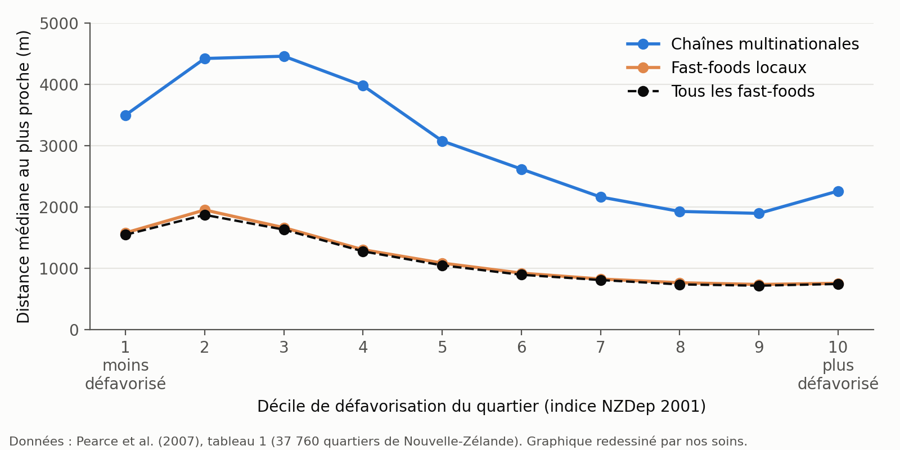
Figure 1 : distance médiane au fast-food le plus proche selon le niveau de défavorisation du quartier, en Nouvelle-Zélande (d'après Pearce et al., 2007, tableau 1).
Nous avons retenu ce graphique parce qu'il résume tout l'article. Chaque point est la distance médiane d'un dixième des quartiers du pays, des plus favorisés (à gauche) aux plus défavorisés (à droite). Les trois courbes descendent : plus un quartier est défavorisé, plus le fast-food le plus proche est près. Les chaînes multinationales, moins nombreuses, sont toujours plus loin, mais elles suivent la même pente. Seul le premier dixième, le plus favorisé, fait un peu exception : ses fast-foods sont plus proches que ceux des deux groupes suivants.
Discussion. Les auteurs avancent trois explications : une demande plus forte dans les quartiers défavorisés, une densité de population plus élevée (mais le lien demeure à densité égale) et des loyers commerciaux plus bas. Surtout, les supermarchés suivent exactement la même répartition. On ne peut donc pas parler d'un « ciblage » des quartiers pauvres par la restauration rapide : ce sont tous les commerces qui y sont plus proches. Les auteurs reconnaissent aussi que la distance au commerce le plus proche ne dit rien de ce que les habitants achètent réellement. D'autres travaux nuancent d'ailleurs ce résultat : à Glasgow, Macintyre et al. (2005) ne trouvent pas de lien aussi net entre pauvreté et restauration rapide.
Nous reprenons trois idées de cet article : travailler à une échelle très fine (le carreau de 200 m joue ici le rôle de l'îlot), mesurer les distances sur le réseau de rues plutôt qu'à vol d'oiseau (nos isochrones), et vérifier que le lien avec la pauvreté ne s'explique pas seulement par la densité (corrélations partielles et modèle). Nous ajoutons un facteur absent de leur étude : les gares et stations, qui amènent une clientèle de passage.
| Membre | Rôle principal |
|---|---|
| Coulibaly Aboubakar | [À FAIRE] |
| [Nom 2] | [À FAIRE] |
| [Nom 3] | [À FAIRE] |
Nous travaillons sur un espace commun, un dossier Google Drive partagé qui contient les scripts, les données et le rapport. Le code est aussi versionné sur un dépôt GitHub public, ce qui garde l'historique de chaque modification et permet à chacun de relancer toute l'étude.
Le diagramme de Gantt prévisionnel, établi sur 30 heures par tranches de 2 heures, est présenté en annexe A.
Il n'existe aucune liste de kebabs prête à l'emploi en open data. Nous avons donc constitué notre propre base en croisant plusieurs sources. Toute la collecte est automatisée en Python, ce qui la rend entièrement reproductible (voir l'annexe B).
Notre terrain d'étude est la Métropole d'Aix-Marseille-Provence et ses 92 communes. Pour les comparaisons entre territoires, nous découpons la ville de Marseille en ses 16 arrondissements, plus fins que la commune. Cela donne 107 zones de travail : les 91 autres communes et les 16 arrondissements marseillais.
Pour les analyses statistiques, nous descendons à une échelle beaucoup plus fine, celle du carreau Insee de 200 mètres de côté. La métropole compte 25 957 carreaux habités, dont 3 150 à Marseille. C'est l'échelle la plus fine que diffuse l'Insee, et celle que propose le sujet : elle permet de distinguer une rue commerçante d'un quartier résidentiel voisin. Nous avons aussi refait les analyses avec des carreaux de 1 km, en additionnant les petits carreaux : les conclusions sont les mêmes, avec des corrélations plus fortes car il y a moins de carreaux vides.
Enfin, un zoom sur la ville de Marseille permet de comparer nos résultats à l'étude parisienne.
Tableau 1 : sources de données mobilisées
| Donnée | Source | Usage |
|---|---|---|
| Limites des communes et arrondissements | API Découpage administratif (IGN, Insee) | Périmètre, regroupements |
| Kebabs | OpenStreetMap, via l'API Overpass | Base de travail |
| Kebabs | Répertoire SIRENE de l'Insee, via l'API Recherche d'entreprises | Base de travail |
| Gares, métro, tram | OpenStreetMap, via l'API Overpass | Calcul de distances |
| Population, revenus, âges, logement | Insee, Filosofi 2019, carreaux de 200 m | Variables explicatives |
Dans OpenStreetMap, nous retenons les établissements dont la cuisine est déclarée comme kebab, döner ou shawarma, ainsi que les fast-foods et restaurants dont le nom contient « kebab » ou « döner ». Nous obtenons ainsi 85 établissements répartis dans 16 communes, dont 55 à Marseille.
Dans SIRENE, nous cherchons les établissements de restauration encore en activité dont le nom ou l'enseigne contient un mot-clé. Les mots-clés principaux (kebab, doner, döner, durum) renvoient 51 établissements. Des mots-clés secondaires, plus incertains, comme Istanbul, Bosphore, Antalya, Berliner ou Shawarma, en ajoutent 39. Cela fait 90 établissements dans 12 communes, dont 63 à Marseille. Nous avons aussi testé les mots « grill », « snack » et « tacos », puis nous les avons abandonnés, car ils ramenaient trop de restaurants qui ne sont pas des kebabs.
Ces deux listes brutes ont ensuite été nettoyées et fusionnées en quatre étapes.
Nous avons d'abord jugé la fiabilité de chaque établissement. Il est considéré comme certain si son nom contient un mot-clé kebab ou si sa seule cuisine déclarée est le kebab. Il est considéré comme probable si le kebab n'est qu'une offre parmi d'autres, dans un snack généraliste par exemple, ou si son nom est seulement évocateur, comme « Istanbul ». Dix établissements ont été écartés comme faux positifs : la recherche de SIRENE ramenait par exemple une pizzeria (Pizza King) ou un restaurant de paella, et nous avons retiré à la main une pâtisserie orientale.
Nous avons ensuite supprimé les doublons à l'intérieur de SIRENE. Quand un local change d'exploitant, l'ancien établissement reste parfois enregistré comme actif. C'est le cas, par exemple, de cinq établissements successifs au 18-20 cours Belsunce. Nous avons regroupé les établissements situés à moins de 30 mètres l'un de l'autre et portant des noms proches, en gardant le plus récent. Sept doublons ont ainsi été éliminés.
La troisième étape consistait à reconnaître les kebabs présents dans les deux sources. Deux fiches désignent le même lieu si elles ont le même numéro SIRET, si elles sont à moins de 100 mètres avec des noms proches, ou si elles se trouvent à la même adresse (moins de 10 mètres). La distance seule ne suffit pas, car deux kebabs différents sont parfois voisins. Nous avons retrouvé 14 kebabs dans les deux sources, dont la moitié grâce au SIRET.
Enfin, nous avons fusionné le tout, à raison d'une ligne par kebab. Lorsqu'un kebab est dans les deux sources, nous gardons la position donnée par OpenStreetMap, plus précise, car elle est placée sur le bâtiment et non déduite de l'adresse.
Tableau 2 : base finale des kebabs selon la source et la fiabilité
| Source | Certain | Probable | Total |
|---|---|---|---|
| OpenStreetMap seul | 40 | 30 | 70 |
| SIRENE seul | 39 | 21 | 60 |
| Les deux sources | 13 | 1 | 14 |
| Total | 92 | 52 | 144 |
Notre base finale compte 144 kebabs, dont 95 à Marseille et 13 à Aix-en-Provence. Les deux sources n'ont que 14 kebabs en commun : elles se complètent bien, mais aucune n'est exhaustive. Nous menons les analyses sur l'ensemble des kebabs, certains et probables, puis nous vérifions que les résultats tiennent avec les seuls kebabs certains.
Ce faible recouvrement permet aussi d'estimer le nombre réel de kebabs par la méthode de capture-recapture de Lincoln-Petersen : $\hat N = \frac{n_{OSM} \times n_{SIRENE}}{n_{commun}} = \frac{84 \times 74}{14} \approx 440$. Notre base couvrirait donc environ un tiers des kebabs de la métropole. Ce chiffre reste indicatif, car la méthode suppose que les deux sources sont indépendantes, ce qui est douteux : un kebab bien visible, avec « kebab » dans son nom, a plus de chances de figurer dans les deux.
Nous avons extrait d'OpenStreetMap 42 gares SNCF et TER, 29 stations de métro et 61 arrêts de tramway (à Marseille et Aubagne). Nous avons aussi gardé cinq gares situées juste en dehors de la métropole, comme Bandol ou Saint-Martin-de-Crau, car elles peuvent être la gare la plus proche d'un kebab situé en bordure. La définition même de la « gare » est un choix de méthode : nous testerons d'abord les gares SNCF seules, puis l'ensemble des stations de transport en commun.
Les caractéristiques des habitants proviennent des données carroyées Filosofi 2019 de l'Insee. Les carreaux de 200 mètres couvrant la métropole regroupent 1 822 434 habitants, dont 810 486 à Marseille. Chaque carreau est rattaché à la commune, ou à l'arrondissement, qui contient son centre.
À partir de ces données, nous construisons pour chaque carreau sept indicateurs : la densité de population, le niveau de vie moyen par habitant, le taux de pauvreté des ménages, la part de logements sociaux, la part des 18-39 ans, la part des 65 ans et plus, et la distance à la gare ou à la station la plus proche. Le détail des calculs figure dans le dictionnaire des données (annexe C).
Notre collecte comporte plusieurs limites qu'il faut garder à l'esprit.
La première concerne l'exhaustivité. OpenStreetMap est une carte collaborative, remplie par des bénévoles : n'importe qui peut y ajouter ou corriger un restaurant. Pour savoir qui renseigne nos kebabs, nous avons récupéré l'historique de leurs fiches. Les 85 kebabs ont été modifiés en dernier par 53 contributeurs différents, mais un seul d'entre eux a mis à jour 16 fiches, et les trois plus actifs en couvrent près d'un tiers. La source dépend donc beaucoup de quelques passionnés, souvent plus actifs dans les grandes villes qu'à la campagne. Les fiches sont en revanche plutôt récentes : 78 % ont été modifiées depuis 2024, même si un quart n'ont jamais été retouchées depuis leur création, et deux datent de 2012.
SIRENE, de son côté, ne permet de trouver que les kebabs dont le nom contient un mot-clé : un « Snack du Port » qui vend des kebabs reste invisible.
À l'inverse, la recherche dans SIRENE ramène des restaurants qui ne sont pas des kebabs. Nous en avons écarté dix, mais les établissements classés comme probables restent incertains.
Les données n'ont pas non plus la même date. OpenStreetMap et SIRENE sont à jour en 2026, alors que les données Filosofi datent de 2019. Par ailleurs, SIRENE indique si un établissement est fermé, mais OpenStreetMap ne le fait pas toujours.
Il faut aussi tenir compte du secret statistique : pour les carreaux très peu peuplés, l'Insee remplace les vraies valeurs par des estimations.
Enfin, une grande partie de la métropole est rurale ou naturelle. La plupart des carreaux n'ont donc aucun kebab, ce dont les modèles devront tenir compte.
Toutes les cartes de cette partie sont construites à partir de la base nettoyée de 144 kebabs.
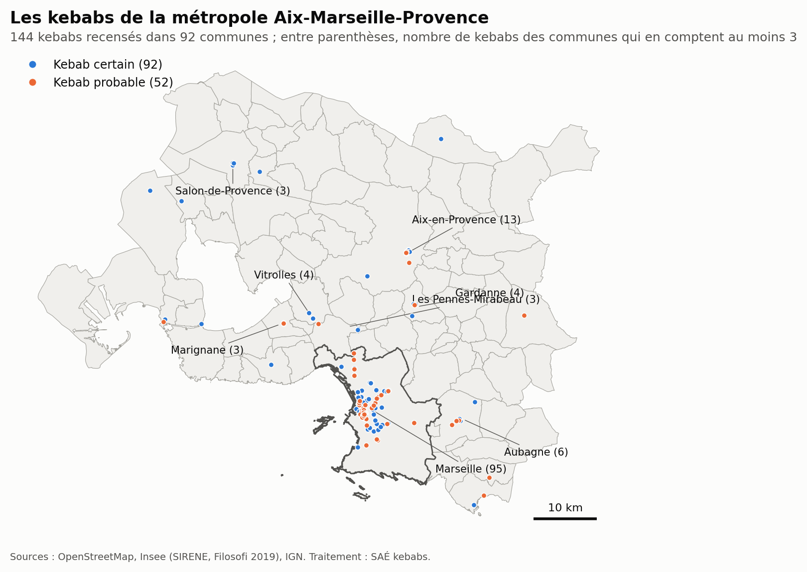
Figure 2 : les kebabs de la métropole Aix-Marseille-Provence.
À l'échelle de la métropole, la répartition est très inégale. Marseille concentre 95 des 144 kebabs, soit 66 %, alors qu'elle n'abrite que 46 % de la population. En dehors de Marseille, seules 17 communes sur 91 comptent au moins un kebab. Il s'agit surtout de villes moyennes : Aix-en-Provence (13 kebabs), Aubagne (6), Vitrolles et Gardanne (4 chacune). Les 74 communes sans kebab regroupent pourtant 472 000 habitants, principalement dans des communes périurbaines ou rurales.
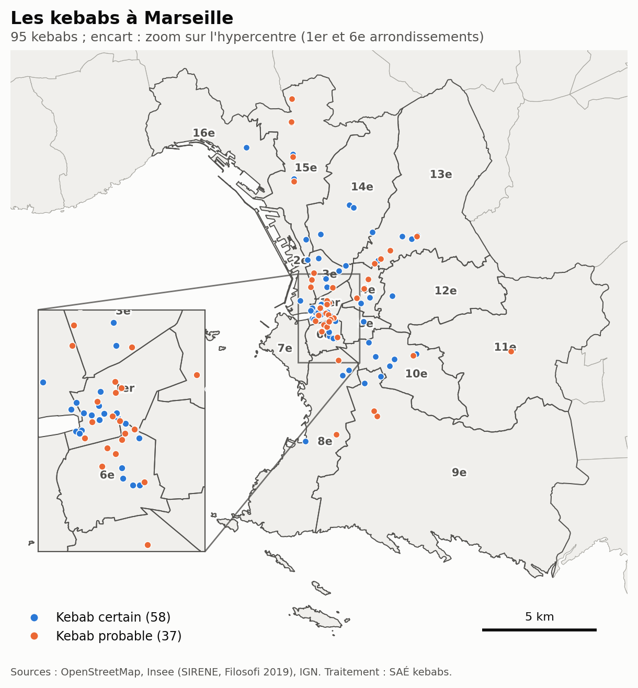
Figure 3 : les kebabs à Marseille, avec un zoom sur l'hypercentre.
À Marseille, les kebabs forment un noyau très dense dans les 1er et 6e arrondissements, autour de la Canebière, de Noailles et du cours Julien. Ils s'étirent ensuite le long de deux axes, l'un vers le nord (3e, 14e et 15e arrondissements), l'autre vers l'est (4e et 13e). Les quartiers Sud et Est sont presque vides : on ne compte aucun kebab dans le 7e arrondissement, et un seul dans le 11e comme dans le 12e.
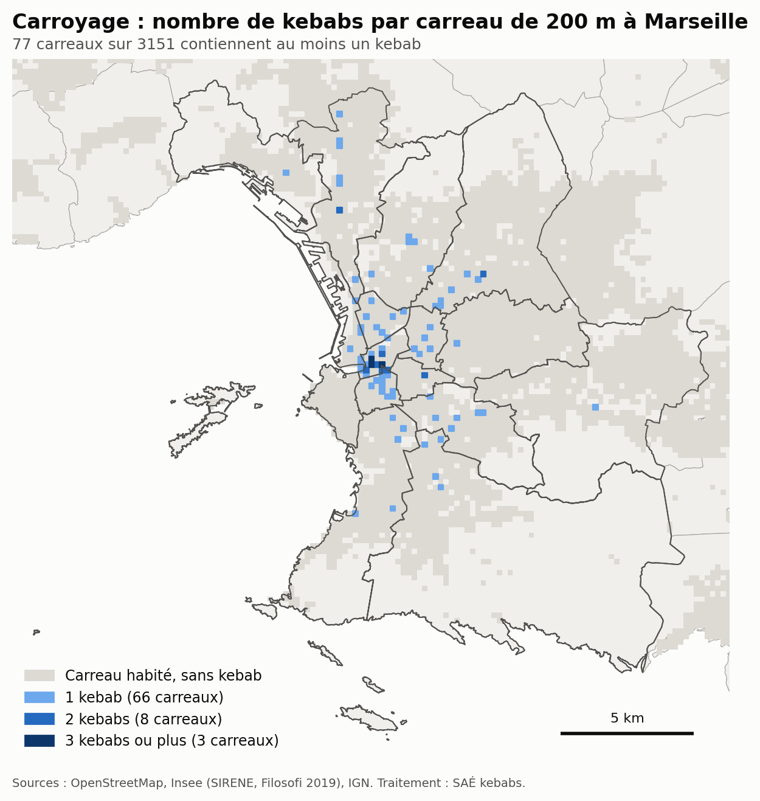
Figure 4 : nombre de kebabs par carreau de 200 m à Marseille.
Chaque kebab est ensuite placé dans le carreau Insee de 200 mètres qui le contient. Trois kebabs se trouvent dans des carreaux sans habitants, comme des zones commerciales : nous avons ajouté ces carreaux pour ne pas les perdre. À Marseille, seuls 77 carreaux sur 3 151, soit 2,4 %, contiennent un kebab. La plupart (66) n'en ont qu'un, et trois carreaux de l'hypercentre en ont trois ou plus, jusqu'à six. La variable que nous cherchons à expliquer est donc presque toujours nulle, ce qui orientera le choix du modèle.
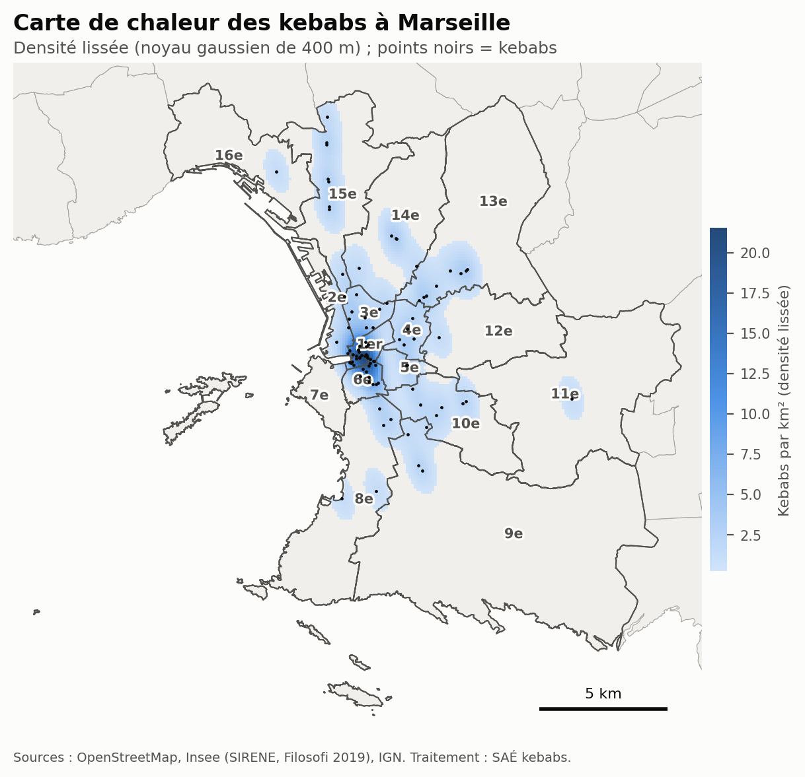
Figure 5 : densité lissée des kebabs à Marseille.
La carte de chaleur lisse la position des kebabs sur environ 400 mètres, soit quelques minutes de marche. Elle fait ressortir un pôle unique et très marqué dans l'hypercentre, avec plus de 20 kebabs au km², et quelques pôles secondaires plus modestes, à Saint-Just et Malpassé au nord-est, et vers la Timone et Baille au sud-est.
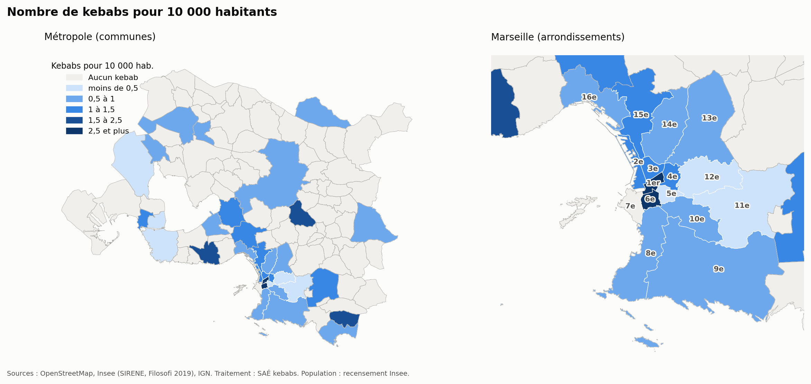
Figure 6 : nombre de kebabs pour 10 000 habitants, par commune et par arrondissement.
Tableau 3 : kebabs par arrondissement de Marseille
| Arrondissement | Kebabs | Population | Kebabs pour 10 000 hab. |
|---|---|---|---|
| 1er | 23 | 37 599 | 6,1 |
| 2e | 3 | 24 378 | 1,2 |
| 3e | 8 | 58 029 | 1,4 |
| 4e | 5 | 49 363 | 1,0 |
| 5e | 2 | 45 702 | 0,4 |
| 6e | 14 | 38 476 | 3,6 |
| 7e | 0 | 35 173 | 0,0 |
| 8e | 5 | 84 683 | 0,6 |
| 9e | 4 | 77 406 | 0,5 |
| 10e | 6 | 60 317 | 1,0 |
| 11e | 1 | 59 883 | 0,2 |
| 12e | 1 | 64 399 | 0,2 |
| 13e | 8 | 95 112 | 0,8 |
| 14e | 5 | 60 505 | 0,8 |
| 15e | 9 | 79 161 | 1,1 |
| 16e | 1 | 15 854 | 0,6 |
| Marseille | 95 | 886 040 | 1,1 |
| Reste de la métropole | 49 | 1 053 037 | 0,5 |
Même rapporté au nombre d'habitants, l'écart reste fort. Marseille compte 1,1 kebab pour 10 000 habitants, soit deux fois plus que le reste de la métropole. Les 1er et 6e arrondissements réunissent à eux seuls 39 % des kebabs marseillais pour seulement 9 % des habitants. La population qui vit sur place n'explique donc pas tout : l'hypercentre attire aussi des gens de passage, avec ses commerces, sa gare et sa vie nocturne. Une opposition entre le Nord et le Sud apparaît également, puisque les arrondissements du nord (13e à 16e) comptent 0,9 kebab pour 10 000 habitants, deux fois plus que ceux du sud et de l'est (7e à 12e), à 0,45.
Ces taux doivent cependant être lus avec prudence dans les petites communes. À Ceyreste ou à Ensuès-la-Redonne, un seul kebab pour environ 5 000 habitants suffit à donner un taux de 2 pour 10 000, qui n'a pas de réelle signification.
Ces premières cartes vont dans le sens de plusieurs de nos hypothèses. La concentration des kebabs (H1) est très visible, et une double opposition, entre centre et périphérie et entre Nord et Sud, se dessine (H4). Le pôle principal entoure par ailleurs la gare Saint-Charles, ce qui justifie d'étudier l'effet des gares (H3). Il reste à confirmer tout cela par des tests statistiques, ce qui fait l'objet de la partie suivante.
Chaque carreau de 200 mètres porte à la fois son nombre de kebabs et les sept indicateurs décrits plus haut (section 3.5). Nous pouvons donc comparer directement les carreaux entre eux.
Avant cela, nous avons fait un choix important. Pour les carreaux de moins de 11 ménages, l'Insee remplace les vraies valeurs par des estimations afin de respecter le secret statistique. C'est le cas de 62 % des carreaux, mais ils ne contiennent que 7 kebabs sur 141. Nous les avons donc écartés, pour ne travailler que sur des données réelles. Il reste 9 790 carreaux dans la métropole, dont 2 493 à Marseille. Parmi eux, 110 contiennent au moins un kebab, dont 74 à Marseille.
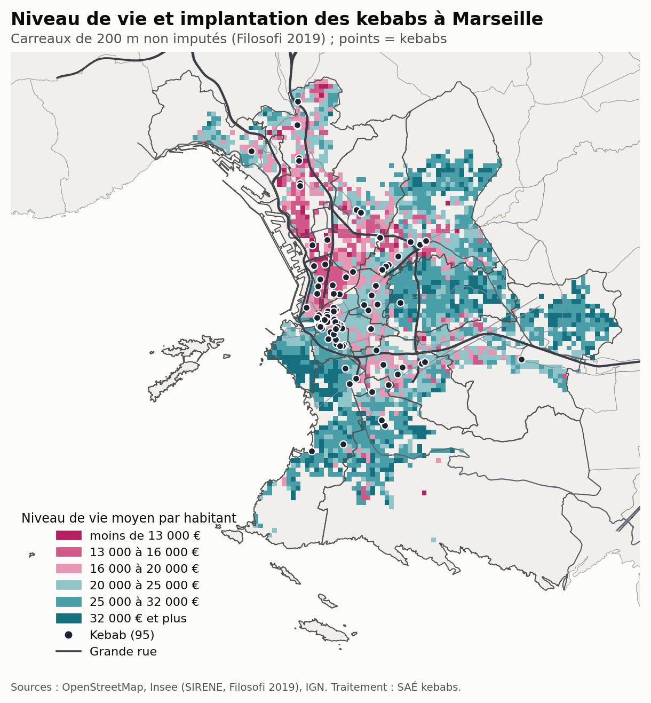
Figure 7 : niveau de vie moyen par carreau et implantation des kebabs à Marseille.
On pourrait penser que les kebabs sont nombreux au centre simplement parce que beaucoup de gens y habitent. Pour le vérifier, nous avons mesuré, pour chaque kebab, la distance qui le sépare du kebab le plus proche, puis nous avons comparé la moyenne obtenue avec ce que l'on observerait si les kebabs étaient placés au hasard là où vivent les habitants. Nous avons simulé 999 répartitions de ce type, en tirant les carreaux en proportion de leur population.
Tableau 4 : distance moyenne entre un kebab et le kebab le plus proche
| Territoire | Distance observée | Distance attendue si les kebabs suivaient la population | p-valeur |
|---|---|---|---|
| Métropole | 812 m | 1 572 m | 0,001 |
| Marseille | 332 m | 575 m | 0,001 |
Les kebabs sont deux fois plus proches les uns des autres que ne le voudrait la seule répartition des habitants. Aucune des 999 simulations n'atteint un tel regroupement, ce qui donne une p-valeur de 0,001, la plus petite possible avec ce nombre de tirages. Notre première hypothèse est donc confirmée : les kebabs sont plus concentrés que la population.
Le nombre de kebabs par carreau est presque toujours nul et sa distribution est très déséquilibrée. Nous utilisons donc la corrélation de Spearman, qui repose sur le classement des valeurs et non sur les valeurs elles-mêmes, plutôt que celle de Pearson. Comme nous réalisons 14 tests (7 indicateurs sur 2 territoires), nous appliquons la correction de Holm, qui évite de trouver des liens significatifs par simple effet du hasard.
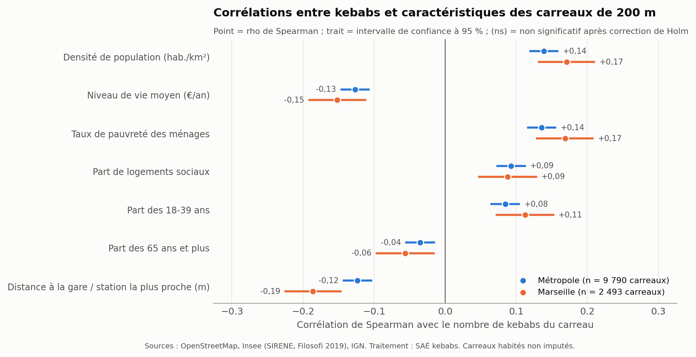
Figure 8 : corrélations de Spearman entre le nombre de kebabs et les indicateurs des carreaux.
Toutes les corrélations sont significatives après correction, et elles vont dans le même sens à Marseille et dans l'ensemble de la métropole. Les kebabs sont plus nombreux dans les carreaux denses, pauvres, jeunes et proches d'une gare ou d'une station, et plus rares dans les carreaux aisés et âgés.
Ces corrélations restent toutefois faibles, la plus forte atteignant 0,19. Ce n'est pas étonnant : entre 97 et 99 % des carreaux n'ont aucun kebab, ce qui réduit mécaniquement les coefficients. La comparaison directe entre carreaux avec et sans kebab est plus parlante. Toutes les différences présentées ci-dessous sont significatives (test de Mann-Whitney).
Tableau 5 : valeurs médianes des carreaux avec et sans kebab, à Marseille
| Indicateur | Carreaux avec kebab | Carreaux sans kebab |
|---|---|---|
| Densité de population | 16 600 hab./km² | 4 500 hab./km² |
| Niveau de vie moyen | 19 400 € | 24 500 € |
| Taux de pauvreté des ménages | 28 % | 13 % |
| Part des 18-39 ans | 29 % | 24 % |
| Distance à la gare ou station la plus proche | 245 m | 1 080 m |
Le logement social fait figure d'exception, avec la corrélation la plus faible. Les kebabs s'installent bien dans des quartiers pauvres, mais pas dans les grands ensembles de logements sociaux des quartiers Nord. On les trouve surtout dans le centre ancien, à Noailles, à Belsunce ou le long de la Canebière, où les ménages modestes sont logés dans un parc privé souvent dégradé.
Il faut cependant se méfier d'un effet confondant. Densité, pauvreté et proximité des gares augmentent toutes en se rapprochant du centre-ville. Ces indicateurs sont donc liés entre eux, et chaque corrélation reflète en partie la même opposition entre centre et périphérie. Pour isoler l'effet propre de chacun, nous avons calculé à Marseille des corrélations partielles, c'est-à-dire à distance égale du Vieux-Port. Elles diminuent nettement mais restent significatives pour le niveau de vie (-0,12), la pauvreté (0,12), la proximité des gares (-0,11) et la densité (0,09). En revanche, le lien avec le logement social disparaît presque (0,04). La deuxième hypothèse est donc confirmée pour la pauvreté, la densité et l'âge, mais pas pour le logement social. La modélisation (partie 6) permettra d'estimer plus précisément le poids de chaque facteur.
L'indicateur « part des 18-39 ans » mélange deux publics bien différents : les étudiants, qui ont pour la plupart entre 18 et 24 ans, et les jeunes actifs, entre 25 et 39 ans. Pour savoir lequel des deux compte, nous avons repris l'analyse avec les dix tranches d'âge de l'Insee. Pour chacune, nous comparons sa part dans la population des carreaux avec et sans kebab, et nous calculons sa corrélation avec le nombre de kebabs, toujours avec la correction de Holm.
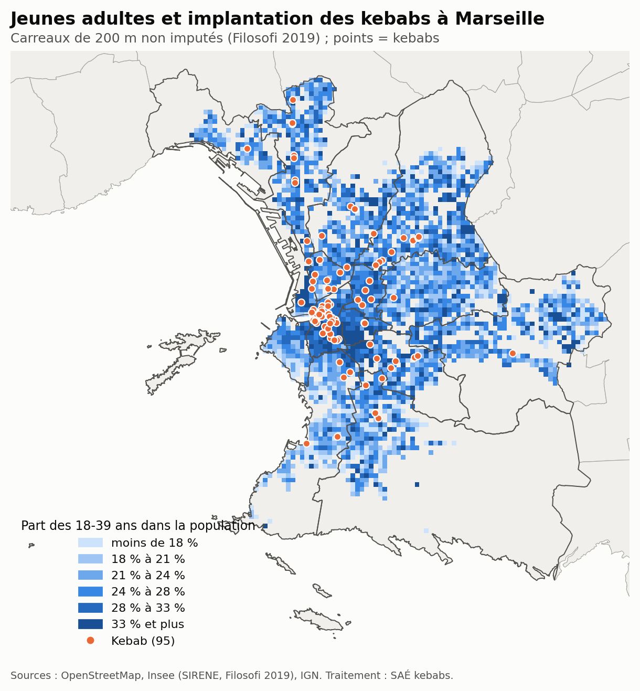
Figure 9 : part des 18-39 ans par carreau et implantation des kebabs à Marseille.
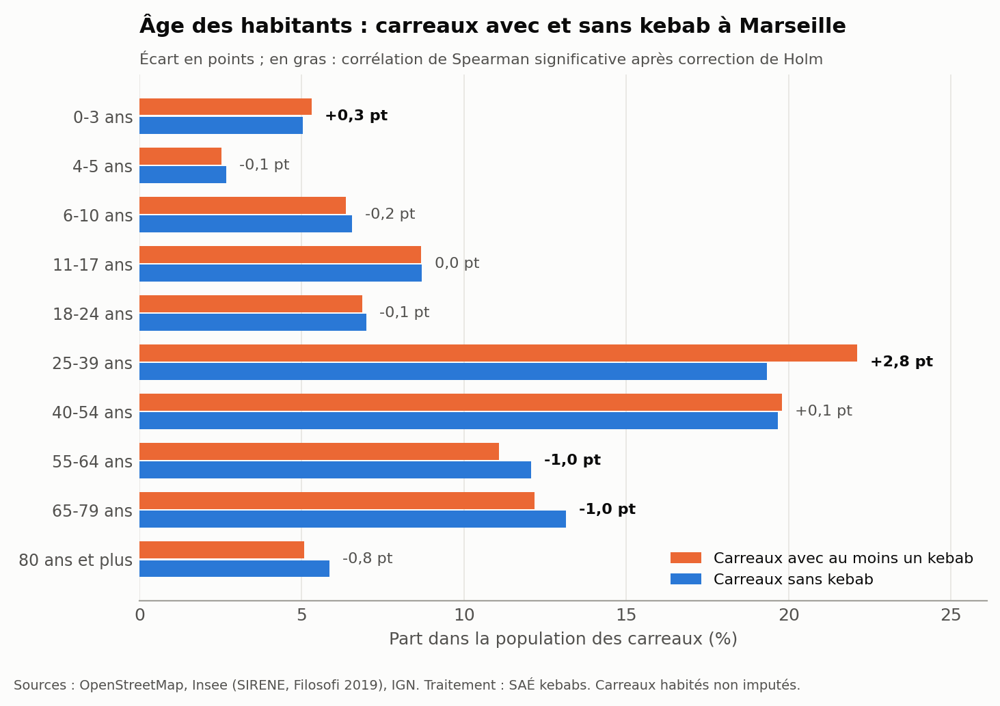
Figure 10 : âge des habitants des carreaux avec et sans kebab, à Marseille.
Le résultat est net : seule la tranche des 25-39 ans est plus présente autour des kebabs. Elle représente 22,1 % des habitants des carreaux avec kebab, contre 19,3 % ailleurs, soit un écart de 2,8 points à Marseille et de 4,1 points dans la métropole. Les 18-24 ans, eux, ne font aucune différence (6,9 % contre 7,0 %). Les 55-79 ans sont légèrement moins présents, d'environ un point par tranche. On note enfin un peu plus de très jeunes enfants (0-3 ans), ce qui correspond aux enfants de ces jeunes ménages.
Contrairement à une idée répandue, le kebab n'est donc pas, à Marseille, un commerce d'étudiants. Il s'implante plutôt là où vivent de jeunes actifs, souvent dans les petits logements du centre ancien. Deux réserves s'imposent toutefois. Les étudiants sont parfois recensés chez leurs parents, ce qui peut les sous-estimer dans les quartiers du centre. Et l'âge reste étroitement lié à la densité et à la pauvreté, un effet que la modélisation devra démêler.
Pour tester ces fractures, nous comparons le nombre de kebabs par habitant entre groupes d'arrondissements à l'aide d'un test binomial exact. L'idée est simple : si les kebabs suivaient la population, chaque groupe d'arrondissements aurait une part des kebabs égale à sa part des habitants.
Tableau 6 : kebabs pour 10 000 habitants selon les groupes d'arrondissements
| Comparaison | Kebabs pour 10 000 hab. | p-valeur |
|---|---|---|
| Nord (13e-16e) et Sud-Est (7e-12e) | 0,92 contre 0,45 | 0,024 |
| Centre (1er-6e) et Nord (13e-16e) | 2,17 contre 0,92 | < 0,001 |
Les deux écarts sont significatifs. Les quartiers Nord comptent deux fois plus de kebabs par habitant que le Sud et l'Est, et le centre en compte plus de deux fois plus que le Nord. Notre quatrième hypothèse est donc confirmée : la carte des kebabs suit le gradient social de Marseille, avec un centre populaire et des quartiers Nord plus pauvres que le Sud aisé. Il s'agit néanmoins d'une association, et non d'un lien de cause à effet.
Où sont les gares par rapport aux kebabs ? La figure 11 superpose les kebabs marseillais et les 132 gares et stations du périmètre : gares SNCF et TER, stations de métro et arrêts de tramway. Les kebabs suivent nettement les lignes de transport, en particulier le métro et le tram du centre-ville, alors que les gares SNCF des quartiers périphériques n'en attirent que peu.
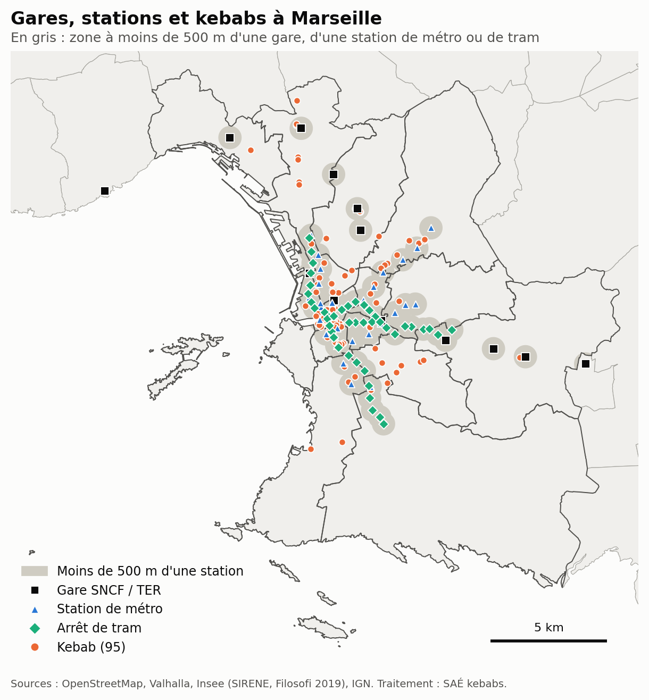
Figure 11 : gares, stations de métro, arrêts de tram et kebabs à Marseille.
Pour le vérifier, nous mesurons la distance de chaque kebab à la gare ou à la station la plus proche, et nous la comparons à celle qu'auraient des kebabs placés au hasard chez les habitants (999 simulations, comme pour le test de la section 5.2). Nous testons deux définitions de la gare, car c'est un choix qui peut changer le résultat : les gares SNCF seules, puis toutes les stations.
Tableau 7 : distance des kebabs et des habitants à la gare la plus proche, à Marseille
| Définition de la gare | Distance médiane des kebabs | Si les kebabs suivaient la population | p-valeur | Kebabs à moins de 500 m | Habitants à moins de 500 m |
|---|---|---|---|---|---|
| Gares SNCF et TER | 1 170 m | 1 630 m | 0,003 | 15 % | 8 % |
| Toutes les stations | 230 m | 700 m | 0,001 | 78 % | 39 % |
Les kebabs sont nettement plus proches des gares que les habitants, et l'écart est encore plus fort avec les stations de métro et de tram. À Marseille, 78 % des kebabs se trouvent à moins de 500 mètres d'une station, contre 39 % des habitants. Le résultat est le même à l'échelle de la métropole (60 % contre 22 %). La troisième hypothèse est donc confirmée : les kebabs recherchent les lieux de passage, et c'est la proximité du métro et du tram, plus que celle des grandes gares, qui compte.
La carte isochrone précise ce résultat autour de la principale gare, Saint-Charles. Elle montre les zones que l'on peut atteindre à pied en 5, 10 et 15 minutes, en suivant le réseau réel des rues et des escaliers, et non à vol d'oiseau. Ces zones ont été calculées avec le service libre Valhalla, qui s'appuie sur les données d'OpenStreetMap.
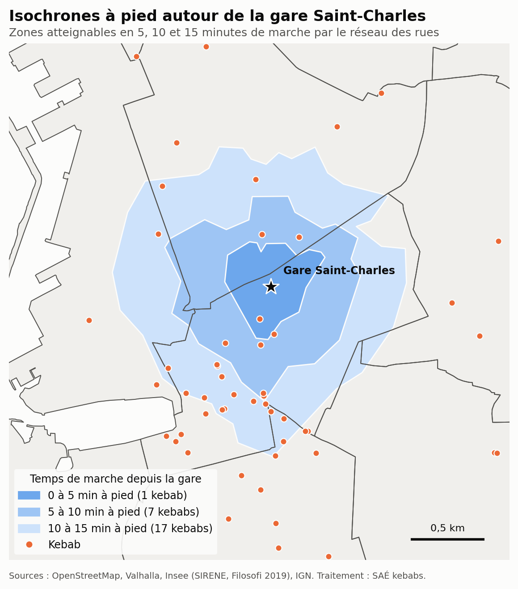
Figure 12 : zones atteignables à pied en 5, 10 et 15 minutes depuis la gare Saint-Charles.
Tableau 8 : kebabs et habitants selon le temps de marche depuis la gare Saint-Charles
| Temps de marche | Kebabs | Habitants | Kebabs pour 10 000 hab. |
|---|---|---|---|
| Moins de 5 min | 1 | 2 300 | 4,4 |
| 5 à 10 min | 7 | 18 000 | 3,9 |
| 10 à 15 min | 17 | 38 000 | 4,5 |
| Reste de Marseille | 70 | 752 000 | 0,9 |
Un quart des kebabs marseillais (25 sur 95) se trouvent à moins de 15 minutes à pied de la gare, alors que cette zone n'abrite que 7 % des habitants de la ville. Rapporté à la population, on y compte près de cinq fois plus de kebabs qu'ailleurs. Il y a cependant une nuance : un seul kebab se trouve à moins de 5 minutes de la gare. Saint-Charles est perchée sur une butte, entourée de voies ferrées et de bâtiments universitaires. Les kebabs se concentrent plutôt entre 10 et 15 minutes de marche, en descendant vers Noailles, Belsunce et la Canebière. Ce n'est donc pas la gare elle-même qui les attire, mais le quartier commerçant et très fréquenté qui l'entoure.
Le dicton « plus c'est près de la gare, moins le kebab est bon » ne peut pas être testé avec nos données, car nous ne disposons d'aucune mesure de la qualité des kebabs. OpenStreetMap et SIRENE ne contiennent pas de notes. Les notes Google, utilisées par ceux qui ont tenté de tester ce dicton, ne sont accessibles que par une API payante, et leur collecte automatique est encadrée par les conditions d'utilisation du service. Un programmeur l'a fait à Paris en 2025 (Pae, 2025) : sur 400 kebabs, la corrélation entre la note Google et la distance à la gare la plus proche n'est que de 0,09, et elle tombe à 0,001 sans les stations de métro. L'auteur conclut lui-même que le lien est trop faible pour confirmer le dicton.
Si ces notes étaient disponibles, le protocole serait le suivant. Pour chaque kebab, on relèverait la note moyenne et le nombre d'avis. On mesurerait la distance à pied à la gare la plus proche, plutôt que la distance à vol d'oiseau. On relierait ensuite la note à cette distance, en tenant compte du nombre d'avis, car un kebab qui n'a que trois avis peut avoir une note extrême par hasard. Il faudrait aussi tester un effet de seuil : la qualité pourrait baisser seulement dans les toutes premières centaines de mètres autour de la gare.
Nos résultats apportent déjà un élément au débat. Les kebabs sont bien plus nombreux près des gares et des stations, car ce sont des lieux de passage. Une clientèle de passage revient peu, ce qui pourrait en théorie moins inciter à soigner la qualité. Mais cela reste une hypothèse : seule une mesure de la qualité permettrait de trancher.
Les parties précédentes ont montré que les kebabs se trouvent dans des quartiers denses, pauvres, jeunes et proches des stations. Mais ces caractéristiques vont souvent ensemble : un quartier dense est souvent pauvre et bien desservi. La question reste donc entière : qu'est-ce qui explique vraiment qu'un kebab s'installe à un endroit plutôt qu'à un autre ? Est-ce la jeunesse des habitants, leur niveau de revenu, la proximité d'une gare ? Pour démêler ces effets, nous construisons un modèle qui mesure l'effet de chaque facteur toutes choses égales par ailleurs.
Nous utilisons une régression logistique. Pour chaque carreau de 200 mètres, elle estime la probabilité qu'il contienne au moins un kebab, en fonction de sept caractéristiques : la densité de population, le niveau de vie moyen, la part de logements sociaux, la part des 25-39 ans, la part des 65 ans et plus, la distance à la station la plus proche, et le fait que le carreau soit situé à Marseille ou non. Le taux de pauvreté n'est pas retenu, car il est presque l'inverse du niveau de vie et les deux ensemble rendraient les effets difficiles à lire. Nous avons vérifié que les autres variables ne sont pas trop liées entre elles.
Le modèle porte sur les 9 790 carreaux de la métropole dont les données sont réelles, dont 110 contiennent un kebab. Pour comparer les effets entre eux, chaque variable est exprimée en écarts-types : l'effet indiqué est celui d'une hausse « typique » de la variable. Il se lit comme un multiplicateur des chances d'avoir un kebab : 2 signifie des chances doublées, 0,5 des chances divisées par deux.
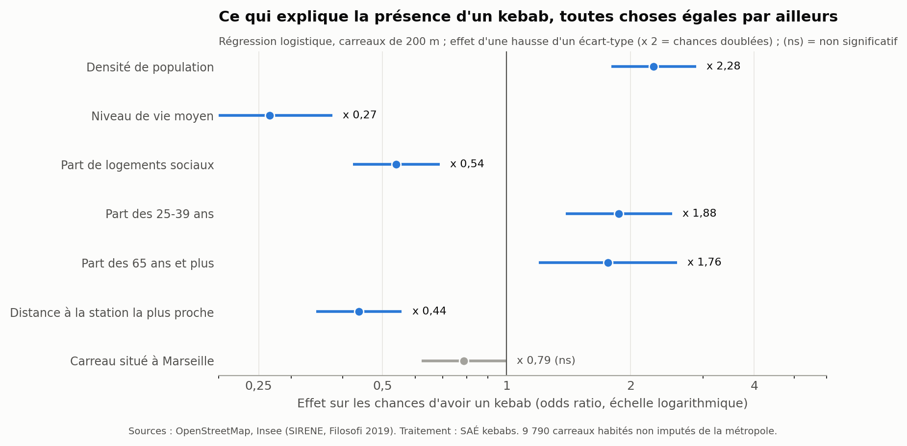
Figure 13 : effet de chaque caractéristique sur les chances d'avoir un kebab, toutes choses égales par ailleurs.
Tableau 9 : effets estimés par le modèle
| Caractéristique du carreau | Hausse d'un écart-type | Effet sur les chances d'avoir un kebab |
|---|---|---|
| Niveau de vie moyen | + 5 500 € par an | divisées par près de 4 (x 0,27) |
| Densité de population | x 2,5 habitants | multipliées par 2,3 |
| Distance à la station la plus proche | x 2,7 en distance | divisées par 2,3 (x 0,44) |
| Part des 25-39 ans | + 7,5 points | multipliées par 1,9 |
| Part des 65 ans et plus | + 11 points | multipliées par 1,8 |
| Part de logements sociaux | + 23 points | divisées par 1,9 (x 0,54) |
| Carreau situé à Marseille | non significatif (x 0,79) |
Le modèle répond clairement à la question de départ. Le facteur le plus déterminant est le niveau de vie : à densité, âge et desserte égaux, les kebabs évitent les quartiers aisés. Une hausse de 5 500 euros du niveau de vie moyen divise par près de quatre les chances de trouver un kebab. Viennent ensuite la densité de population et la proximité d'une station, qui traduisent le besoin d'une clientèle nombreuse et de passage. Les jeunes adultes comptent aussi, mais moins : une part plus forte de 25-39 ans multiplie les chances par 1,9.
Deux résultats méritent une explication. À revenu égal, le logement social réduit les chances d'avoir un kebab. Ce n'est pas contradictoire avec le reste : les kebabs s'installent dans les quartiers modestes du centre ancien, où l'on se loge dans le parc privé, et non dans les grands ensembles, souvent conçus sans rez-de-chaussée commerçants. L'effet positif des 65 ans et plus surprend davantage. Il faut le lire avec la part des 25-39 ans : à part de jeunes adultes égale, plus de seniors signifie surtout moins de familles avec enfants. Ce sont donc les quartiers familiaux et pavillonnaires qui attirent le moins les kebabs.
Enfin, une fois ces facteurs pris en compte, le fait d'être à Marseille n'a plus d'effet propre. Les nombreux kebabs de Marseille s'expliquent donc par ses caractéristiques (densité, pauvreté, réseau de métro et de tram), et non par un effet propre à la ville. Ces résultats restent les mêmes lorsque l'on ne garde que les kebabs certains, ce qui montre qu'ils ne dépendent pas de notre classement des kebabs probables.
Il faut toutefois rester prudent. Le modèle mesure des associations et non des causes : un kebab ne s'installe pas parce que les habitants sont pauvres, mais peut-être parce que les loyers commerciaux y sont plus bas, ou parce que la clientèle de passage y est nombreuse. De plus, le modèle ne tient pas compte du fait que des carreaux voisins se ressemblent (on parle d'autocorrélation spatiale), ce qui peut rendre les intervalles de confiance un peu trop étroits.
Pour juger le modèle, nous le testons sur des carreaux qu'il n'a pas vus pendant son apprentissage : c'est la validation croisée. Les carreaux sont répartis en cinq groupes ; le modèle apprend sur quatre et prédit le cinquième, et l'opération est répétée 10 fois.
Tableau 10 : performances du modèle en validation croisée
| Modèle | AUC | F1-score | Précision | Rappel |
|---|---|---|---|---|
| Modèle complet | 0,93 | 0,22 | 18 % | 31 % |
| Densité de population seule | 0,88 | 0,13 | 8 % | 29 % |
L'AUC mesure la capacité du modèle à classer les carreaux : elle vaut 0,5 pour un modèle qui tirerait au hasard et 1 pour un modèle parfait. Avec 0,93, notre modèle distingue très bien les carreaux qui ont un kebab de ceux qui n'en ont pas. Il fait nettement mieux que la seule densité de population (0,88), ce qui confirme que le revenu, l'âge et les stations apportent une information réelle.
Le F1-score, en revanche, est faible (0,22). Sur une validation, le modèle signale en moyenne 188 carreaux comme « à kebab » : 34 en ont réellement un, et 154 n'en ont pas. Il retrouve ainsi 34 des 109 carreaux qui ont un kebab. Ce résultat modeste s'explique d'abord par la rareté des kebabs : à peine plus d'un carreau sur cent en contient un, ce qui rend toute prédiction exacte très difficile. Ensuite, beaucoup de « fausses alertes » sont sans doute de vrais emplacements de kebabs absents de notre base, qui n'en couvre qu'environ un tiers (section 3.3). Le modèle est donc bon pour repérer les quartiers favorables aux kebabs, mais il ne permet pas de dire dans quelle rue précise un kebab s'installera.
Pour rendre ces résultats lisibles par tous, nous avons réuni toutes les couches de l'étude dans une scène 3D interactive, consultable dans un navigateur : coulibaly-abou.github.io/sae-kebabs-marseille/dashboard/kebabs_3d.html. Chaque carreau de 200 m y devient une colonne dont la hauteur donne le nombre d'habitants et la couleur leur niveau de vie ; les kebabs sont des colonnes dorées que l'on peut survoler. Une visite guidée en sept étapes reprend nos hypothèses, de la fracture Nord-Sud jusqu'au modèle. Elle propose aussi une simulation : les 144 kebabs quittent leur adresse pour se poser au hasard, comme la population, puis reviennent à leur place. On voit alors à l'œil nu le résultat des tests des sections 5.2 et 5.6. Sur 1 000 tirages, la distance médiane entre un kebab et une station va de 960 à 1 870 m, alors qu'elle n'est que de 327 m pour les vrais kebabs. Le relief peut enfin afficher la probabilité calculée par le modèle, avec les douze carreaux les plus favorables où nous ne connaissons aucun kebab. L'annexe D présente cette scène.
La première difficulté a été de trouver les kebabs eux-mêmes. Aucune base publique ne les recense, et le code d'activité de l'Insee (56.10C, restauration rapide) mélange kebabs, pizzerias, burgers et boulangeries. Nous avons donc croisé deux sources imparfaites, ce qui a demandé un long travail de nettoyage : faux positifs à écarter un par un, anciens exploitants restés actifs dans SIRENE au même local, règles d'appariement entre les deux sources. Malgré cela, la méthode de capture-recapture suggère que notre base ne couvre qu'environ un tiers des kebabs réels.
La deuxième difficulté tient aux données de l'Insee. Les carreaux de 200 m sont précieux, mais 62 % d'entre eux contiennent des valeurs estimées pour respecter le secret statistique. Nous avons dû les écarter, ce qui fait perdre une partie des zones peu peuplées. Ces données datent en outre de 2019, alors que nos kebabs sont recensés en 2026.
La troisième difficulté est statistique. Moins de 2 % des carreaux contiennent un kebab : les corrélations sont donc mécaniquement faibles, et un modèle peut paraître excellent en répondant « pas de kebab » partout. Il a fallu choisir des indicateurs adaptés (AUC, F1, seuil optimisé) et des tests par simulation plutôt que des tests classiques.
Enfin, des difficultés plus pratiques : les serveurs d'OpenStreetMap saturent souvent, ce qui nous a conduits à prévoir plusieurs serveurs de secours et à mettre les réponses en cache ; et le choix de ce qu'est une « gare » (SNCF seule ou toutes les stations) change fortement les résultats, ce qui nous a obligés à tester les deux définitions.
Plusieurs améliorations n'ont pas pu être réalisées, faute de temps ou de données.
Nous voulions comprendre la répartition des kebabs dans l'agglomération marseillaise, et savoir si elle révèle d'autres fractures du territoire. La réponse est oui, sur les deux plans.
Les kebabs ne suivent pas simplement la population : ils sont deux fois plus regroupés qu'elle, et 66 % d'entre eux sont à Marseille, qui n'abrite que 46 % des habitants de la métropole (H1). Ils s'installent là où se combinent une forte densité, un niveau de vie modeste, de jeunes actifs et un passage important, près du métro et du tram (H2 et H3). Le modèle, qui distingue très bien les carreaux à kebab des autres, montre que le niveau de vie est le facteur le plus fort, et qu'une fois ces caractéristiques prises en compte, Marseille n'a plus rien de particulier. Deux idées reçues tombent en chemin : le kebab n'est pas un commerce d'étudiants, puisque ce sont les 25-39 ans qui comptent, et il ne s'installe pas dans les grands ensembles de logements sociaux, mais dans le centre ancien.
La carte des kebabs dessine ainsi en creux la géographie sociale de Marseille : un hypercentre populaire et très fréquenté, des quartiers Nord intermédiaires, et un Sud aisé presque sans kebab (H4). Comme Pearce et ses coauteurs l'avaient montré pour la Nouvelle-Zélande, l'association avec la pauvreté est forte, mais elle ne dit rien des causes : loyers commerciaux plus bas, clientèle de passage ou habitudes de consommation peuvent tous y contribuer. Quant au dicton de la gare (H5), nos données ne permettent pas de le trancher.
Ce travail ouvre une piste plus large. Le kebab n'est qu'un exemple : la même méthode, entièrement automatisée et reproductible, pourrait suivre d'autres commerces (boulangeries, salles de sport, cafés de spécialité) et en faire des indicateurs du changement des quartiers. Si l'arrivée de cafés de spécialité accompagne l'embourgeoisement d'un quartier, le recul de ses kebabs pourrait en être un signe tout aussi parlant.
Les Échos, Ce que la carte des kebabs révèle de Paris, vidéo.
Insee, Revenus, pauvreté et niveau de vie en 2019 : données carroyées (Filosofi).
OpenStreetMap et ses contributeurs, données extraites avec l'API Overpass.
Insee et DINUM, API Recherche d'entreprises (répertoire SIRENE).
IGN et Insee, API Découpage administratif (geo.api.gouv.fr).
Pearce, J., Blakely, T., Witten, K. et Bartie, P. (2007). Neighborhood Deprivation and Access to Fast-Food Retailing: A National Study. American Journal of Preventive Medicine, 32(5), 375-382. https://doi.org/10.1016/j.amepre.2007.01.009
Macintyre, S., McKay, L., Cummins, S. et Burns, C. (2005). Out-of-home food outlets and area deprivation: case study in Glasgow, UK. International Journal of Behavioral Nutrition and Physical Activity, 2, 16.
Pae, J. (2025). Analyse des notes Google des kebabs parisiens selon la distance à la gare, billet de blog (jmspae.se), repris par Gigazine, « Testing the theory that 'the closer to the station the worse the food tastes' at a kebab shop », 26 février 2025.
Valhalla, moteur de calcul d'itinéraires libre (isochrones), service public de FOSSGIS e.V. sur les données OpenStreetMap.
Code et données du projet : https://github.com/coulibaly-abou/sae-kebabs-marseille
Scène 3D interactive : https://coulibaly-abou.github.io/sae-kebabs-marseille/dashboard/kebabs_3d.html
Le diagramme ci-dessous découpe les 30 heures de la SAÉ en sept étapes, semaine par semaine, du 21 septembre au 11 décembre 2026. La couleur indique la nature du travail.
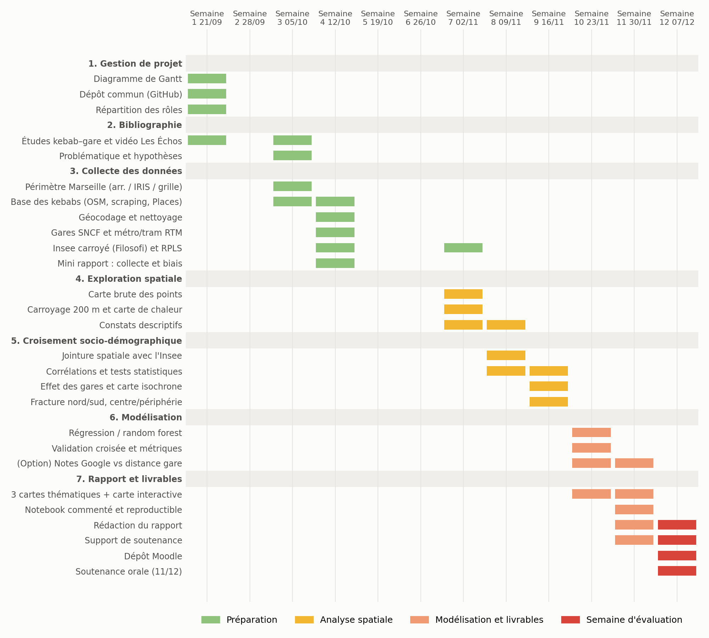
Figure 14 : diagramme de Gantt prévisionnel du projet (30 heures, par tranches de 2 heures).
L'ensemble du traitement est réalisé en Python. Les scripts, commentés et reproductibles, se trouvent dans le dossier scripts du projet et s'exécutent dans l'ordre de leur numéro. Ils sont publiés sur GitHub : github.com/coulibaly-abou/sae-kebabs-marseille.
| Script | Rôle |
|---|---|
| 00_lancer_collecte.py | Lance toute la collecte (scripts 01 à 05) |
| 01_collecte_limites.py | Limites des communes et arrondissements, découpage en 107 zones |
| 02_collecte_kebabs_osm.py | Kebabs d'OpenStreetMap |
| 03_collecte_kebabs_sirene.py | Kebabs du répertoire SIRENE |
| 04_collecte_gares.py | Gares SNCF, stations de métro et arrêts de tram |
| 05_collecte_insee_carreaux.py | Carreaux Insee Filosofi de 200 m |
| 06_nettoyage_kebabs.py | Fiabilité, doublons, fusion des deux sources |
| 07_cartes_exploratoires.py | Carroyage et cartes de la partie 4 |
| 08_croisement_insee.py | Indicateurs, tests et figures des sections 5.1 à 5.5 |
| 09_contributeurs_osm.py | Historique des fiches kebabs d'OpenStreetMap (section 3.6) |
| 10_gares_isochrone.py | Distance aux gares et isochrones de Saint-Charles (section 5.6) |
| 11_modelisation.py | Régression logistique et validation croisée (partie 6) |
| 12_scene_3d.py | Scène 3D interactive et simulation de Monte-Carlo (section 6.4, annexe D) |
| 13_figures_rapport.py | Figure de l'article, diagramme de Gantt, captures de la scène 3D |
Tableau 11 : base des kebabs, description des colonnes (fichier kebabs.csv, 144 lignes)
| Colonne | Description |
|---|---|
| id_kebab | Identifiant du kebab dans notre base (K001 à K144) |
| nom | Nom ou enseigne |
| fiabilite | certain (mot-clé kebab dans le nom ou cuisine kebab seule) ou probable |
| source | osm, sirene, ou osm+sirene si le kebab est dans les deux sources |
| lat, lon | Coordonnées GPS (WGS84) ; position OpenStreetMap si disponible |
| code_zone, commune, arrondissement | Commune, et arrondissement pour Marseille |
| siret, osm_id | Identifiants dans SIRENE et dans OpenStreetMap |
| adresse, naf, date_creation | Adresse, code d'activité et date de création (SIRENE) |
| cuisine_osm | Cuisine déclarée dans OpenStreetMap |
| regle_appariement, distance_osm_sirene_m | Règle et distance qui ont permis de relier les deux sources |
Indicateurs des carreaux (fichier carreaux_indicateurs.gpkg, un carreau de 200 m par ligne). Les variables d'origine sont celles de Filosofi 2019 : ind (individus), men (ménages), men_pauv (ménages pauvres), ind_snv (somme des niveaux de vie), log_soc (logements sociaux), log_av45 à log_inc (logements par période de construction), ind_0_3 à ind_80p (individus par tranche d'âge).
Tableau 12 : calcul des indicateurs des carreaux
| Indicateur | Calcul |
|---|---|
| Densité de population (hab./km²) | ind / surface du carreau (0,04 km²) |
| Niveau de vie moyen (€/an) | ind_snv / ind |
| Taux de pauvreté des ménages | men_pauv / men |
| Part de logements sociaux | log_soc / (log_av45 + log_45_70 + log_70_90 + log_ap90 + log_inc) |
| Part des 18-39 ans | (ind_18_24 + ind_25_39) / ind |
| Part des 25-39 ans (modèle) | ind_25_39 / ind |
| Part des 65 ans et plus | (ind_65_79 + ind_80p) / ind |
| Distance à la gare ou station (m) | distance à vol d'oiseau, en Lambert 93, du centre du carreau à la gare, station de métro ou arrêt de tram le plus proche |
| Distance au Vieux-Port (m) | distance du centre du carreau au Vieux-Port (corrélations partielles) |
| nb_kebabs, presence_kebab | nombre de kebabs du carreau, et 1 s'il en contient au moins un |
| i_est_200 | 1 si l'Insee a remplacé les valeurs du carreau par une estimation (carreaux écartés) |
La scène est un fichier HTML autonome (dossier dashboard du projet), produit par le script 12_scene_3d.py à partir des données traitées ; elle s'ouvre dans n'importe quel navigateur récent et est publiée en ligne : coulibaly-abou.github.io/sae-kebabs-marseille/dashboard/kebabs_3d.html. Elle utilise la bibliothèque deck.gl. On peut la faire pivoter, zoomer, survoler chaque kebab, carreau ou station, et activer ou masquer chaque couche.
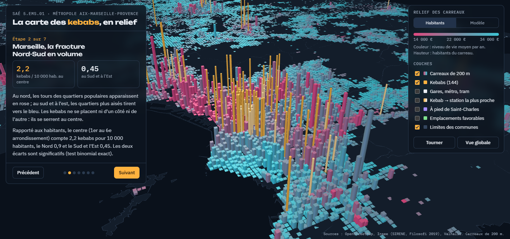
Figure 15 : la scène 3D sur Marseille. Hauteur des colonnes : habitants du carreau ; couleur : niveau de vie (rose pour les plus modestes, bleu pour les plus aisés) ; colonnes dorées : kebabs.
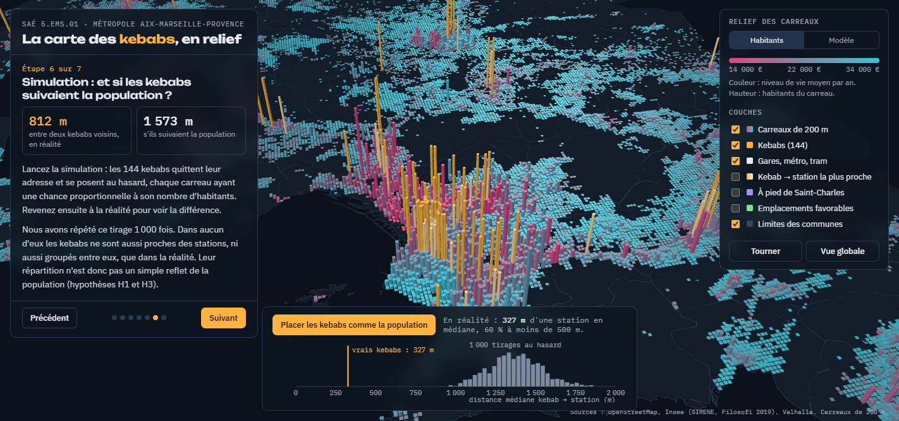
Figure 16 : l'étape de simulation. L'histogramme montre la distance médiane entre un kebab et une station dans 1 000 placements au hasard selon la population ; le trait doré marque les vrais kebabs (327 m).